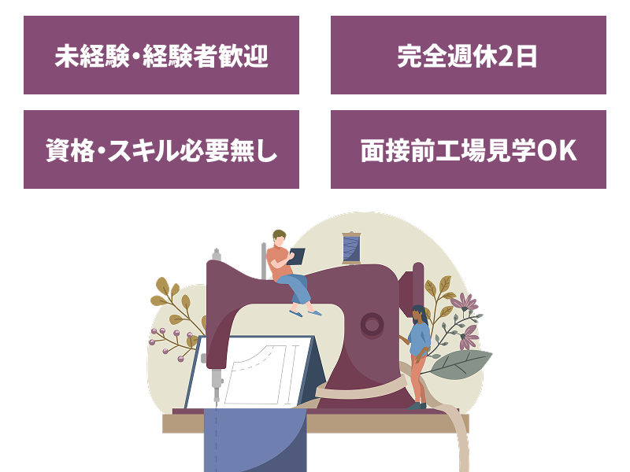

縫製の流れ
-
01
- 裁断
- 型紙に基づき、生地を裁断します。
-
02
- 仕分け
- 裁断後のパーツを整理し、縫製しやすい状態に準備します。
-
03
- 縫製
- パーツを工程ごとに縫い合わせ、製品として形にしていきます。
-
04
- 仕上げ・検査
-
糸の始末や形の整えを行い、製品を仕上げていきます。
また、縫製のミスが無いか厳重な確認を行います。


アサヒでは、デニムを用いたジャケットの縫製を行っております。
デニム生地に対応した設備と技術を生かし、一着一着丁寧に仕上げています。
デニム製品は、縫製の精度や耐久性が求められる製品です。
アサヒでは仕上がりにもこだわり、品質を重視した製品作りに取り組んでおります。
培ってきた縫製技術を大切にしながら、日々の製造に取り組んでいます。
各工程で連携を取りながら、安定した製品づくりを行っています。
01
02
03
04
| 住所 | 〒987-0601 宮城県登米市中田町石森字小倉265 |
|---|---|
| 電話番号 | 0220-34-2136 |
| FAX番号 | 0220-34-2135 |
| 事業内容 | 繊維製品製造業 |
| 代表取締役 | 小林 智弘 |
| 設立 | 昭和45年 |
※営業・セールス目的の電話・FAXによるご連絡はご遠慮いただいております。
We kindly ask that sales and solicitation calls and faxes be refrained
from.

当社では縫製オペレーターを募集しております。
未経験の方から経験者の方まで、幅広く歓迎いたします。
まずは工場見学からでもお気軽にお問い合わせください。
ハローワークの求人ページへ移動します。
ご不明な点がございましたら、お近くのハローワークまでお問い合わせください。
ご応募・工場見学はハローワークを通じて受け付けております。
石ノ森章太郎ふるさと記念館から
車でおよそ5分
石越駅から
車でおよそ12分
登米ICから
車でおよそ13分
当社にお越しになられる際は、Googleマップ等の地図アプリをご利用ください。
※当社付近まで来られますと道路脇に白い看板がございます。看板をみつけましたら、そちらを目印にお越しくださいませ。